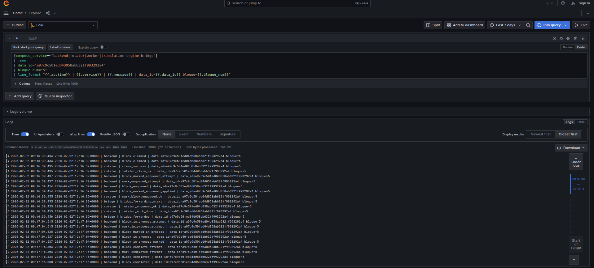

Arquitectura de Tradu Tradu Architecture
Vista técnica de alto nivel: componentes, flujo, tolerancia a fallas y observabilidad. High-level technical view: components, processing flow, fault tolerance, and observability.
Flujo de procesamiento Processing flow
Entrada → Ingesta → Cola → Rotator → Workers → Engine → Persistencia Input → Ingestion → Queue → Rotator → Workers → Engine → Persistence
CSV / Requests
↓
Backend API
↓
Queue (Redis / FIFO)
↓
Rotator (load distribution)
↓
Workers (parallel execution)
↓
Translation Engine
↓
Storage + Audit logs
Fiabilidad Reliability
Máquina de estados State machine
PENDIENTE → CLAIMED → ENCOLADO → EN_PROCESO → COMPLETO/ERROR/CANCELADO PENDING → CLAIMED → QUEUED → PROCESSING → DONE/ERROR/CANCELED
Watchdogs + TTL Watchdogs + TTL
Heartbeats y TTL detectan zombies y reprocesan bloques. Heartbeats and TTL detect zombies and reprocess blocks.
Observabilidad Observability
- Logs JSON con correlation IDs. JSON logs with correlation IDs.
- Métricas Prometheus de latencia y errores. Prometheus metrics for latency and errors.
- Dashboards Grafana con trazabilidad. Grafana dashboards with traceability.
Evidencia técnica Technical evidence
Logs centralizados (Loki) Centralized logs (Loki)
Eventos por servicio, data_id y bloque. Events by service, data_id, and block.
Pipeline distribuido Distributed pipeline
Arquitectura end-to-end con observabilidad integrada. End-to-end architecture with integrated observability.